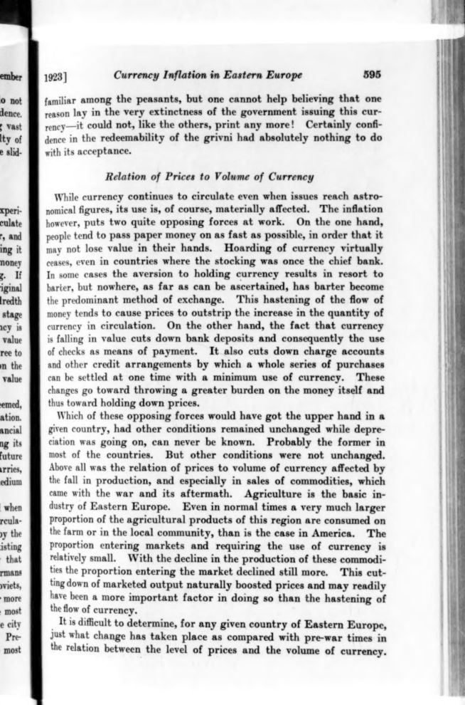

Mann, 1923: quanto vendia o varejo americano sem um censo do comércio
Leitura: 5 min
Lawrence B. Mann estima por três caminhos o comércio varejista americano de 1919, chega a US$ 35,5 bilhões e mostra o avanço das redes de lojas.


Os Estados Unidos de 1923 sabiam quanto produziam suas fábricas, minas, ferrovias, companhias telefônicas, fazendas, bancos e pesqueiros, mas não quanto vendiam suas lojas. Lawrence B. Mann abre o artigo com essa lacuna. O National Bureau of Economic Research, na obra em três volumes sobre a renda dos Estados Unidos, publicada em 1921-22, nem tentou estimar a renda dos trabalhadores do atacado e do varejo, e uma comissão da American Statistical Association acabara de recomendar um censo do comércio.
“Sobre a distribuição de mercadorias, um dos maiores interesses nacionais, não temos informação precisa.” (on the distribution of commodities, one of the greatest of national interests, we have no accurate information)
Diante das queixas frequentes de que os intermediários seriam o grande desperdício na entrega ao consumidor, o autor propõe que o Bureau of the Census faça ao menos um censo decenal do comércio. A dispersão dos varejistas explicava a ausência; a melhora dos transportes e das comunicações reduziria a dificuldade, e a necessidade de conferir as declarações de imposto de renda daria uma razão a mais.
Com que dados se trabalha?
Mann lista cinco fontes: o censo de ocupações, o Internal Revenue Bureau, o Federal Reserve Board com os doze bancos regionais, e os bureaus de pesquisa empresarial de Harvard e de Northwestern. O Federal Reserve recebia relatórios mensais de cerca de 1.200 atacadistas, 500 lojas de departamentos, 60 redes com 23.000 lojas e 4 casas de venda por catálogo. Como os escriturários das lojas foram classificados em 1920 numa rubrica geral, o autor os separa usando as proporções de 1910.
Como chegar ao valor das vendas?
O autor segue três caminhos para 1919. O primeiro soma o custo das mercadorias que entram no varejo, US$ 26,908 bilhões entre manufaturas, hortaliças e frutas, leite, ovos, peixe, carvão e importações, e aplica margens médias de 10% no atacado e 25% no varejo: dá US$ 36,998 bilhões. O segundo parte das vendas brutas declaradas ao fisco e acrescenta cerca de 1.000.000 de lojas sem declaração, a US$ 15.000 por ano cada: US$ 36,195 bilhões. O terceiro multiplica uma venda média de US$ 10.000 por empregado, entre os US$ 11.000 a 12.000 das mercearias e os US$ 8.000 a 9.000 das lojas de departamentos, pelos 3.350.000 empregados: US$ 33,5 bilhões.
Comparado à indústria (US$ 25,042 bilhões de valor adicionado), à agricultura (US$ 21,022 bilhões), às ferrovias (US$ 4,996 bilhões) e à mineração (US$ 4,618 bilhões), o varejo seria, para o autor, a terceira atividade do país em trabalhadores e em valor do trabalho. A distribuição por distritos do Federal Reserve mostra que o varejo acompanha mais a renda e os recursos bancários do que a população.
Quem ganha espaço no varejo?
Três tipos de varejista em grande escala, a loja de departamentos, a casa de venda por catálogo e a rede, vinham levando métodos de grande empresa a um campo de pequenos negociantes. Mann conta cerca de 3.000 lojas de departamentos, 100 casas de catálogo e 1.000 redes, com perto de 100.000 lojas e mais de 25% do varejo; os cerca de 1.200.000 pequenos varejistas ainda fazem três quartos. As cinco grandes redes passaram de 1.501 lojas em 1913 para 7.670 em 1922, alta de mais de 400%, enquanto o número total de varejistas cresceu 11% entre 1910 e 1920. Nos índices de vendas (1919 = 100), as redes de mercearia chegam a 143,5 em 1922, e as casas de catálogo caem a 78,5, sinal, diz o autor, do menor poder de compra dos agricultores.
Na minha leitura
Na minha leitura, o artigo é um exercício de medição indireta: três estimativas independentes, cada uma com suas hipóteses, usadas para conferir umas às outras. A proximidade entre elas é o argumento de Mann para tomar a média.
O texto pertence ao esforço do período para medir a renda nacional setor por setor, e a lacuna que aponta, a falta de um censo do comércio, é a mesma que a comissão da American Statistical Association registrava.
Glossário
- Margem (mark-up)
- acréscimo do comerciante sobre o custo da mercadoria, em porcentagem.
- Valor adicionado
- diferença entre o preço de venda e o custo das mercadorias compradas para revenda.
- Rede de lojas (chain)
- empresa que opera muitas lojas sob a mesma administração.
- Casa de venda por catálogo (mail order house)
- varejista que vende por catálogo e entrega pelo correio, sobretudo à população rural.
Fontes
- The Importance of Retail Trade in the United States — Lawrence B. Mann (pp. 609–617). Internet Archive (número completo, PDF)
- Edição completa, com os demais artigos: Nº 184 do Arquivo.
Documento em domínio público (EUA, publicado antes de 1931), via JSTOR Early Journal Content e Internet Archive. Resumo e comentário do autor deste site, sem afiliação com a American Economic Association. Encontrou um erro? Escreva: a correção é publicada no próprio texto, com data.
← Durand, 1923: o que acontece quando a moeda não para de cair ↑ Nº 184 · A inflação polonesa, o varejo americano e os sindicatos soviéticos Hewes, 1923: por que os sindicatos sobreviveram na Rússia soviética →